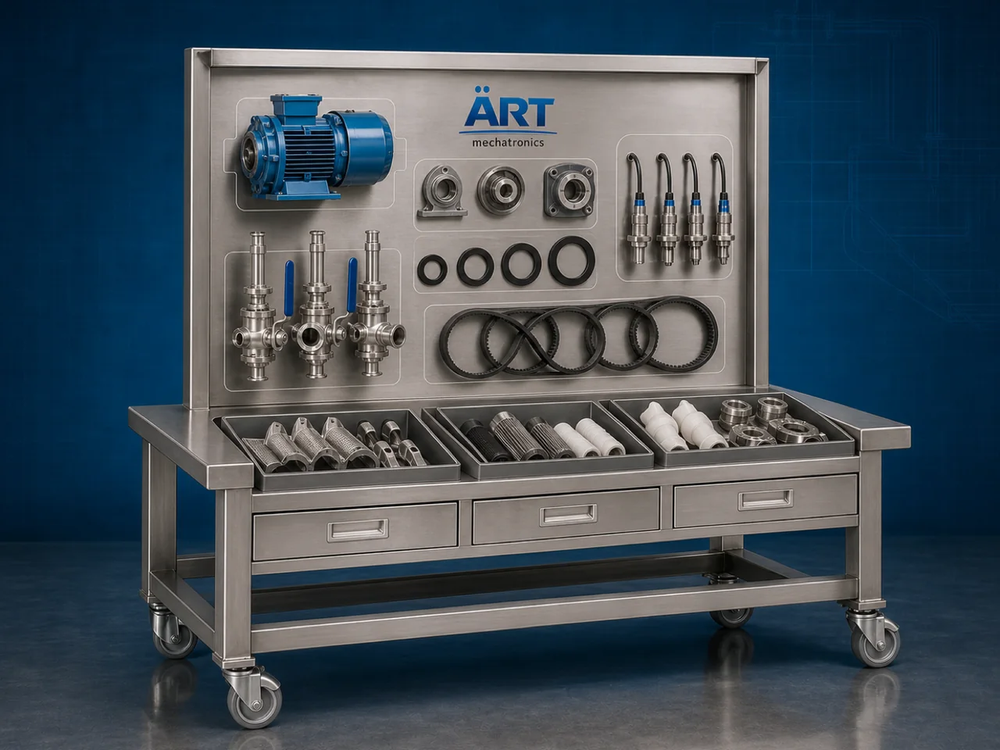

Industrial Spare Parts & Consumables (Plant Machinery Spares & Maintenance Solutions)
Industrial Spare Parts & Consumables are critical components used for maintenance, repair, replacement, servicing, performance optimization, and continuous operation of industrial plants and machinery across food processing, packaging, pharmaceuticals, chemicals, HVAC, boilers, conveyors, dryers, mixers, grinders, crushers, automation systems, and heavy industrial manufacturing sectors.

About the Industrial Spare Parts & Consumables
Industrial spare parts and consumables are widely used for:
- Preventive maintenance operations
- Machinery repair and servicing
- Production line uptime optimization
- Wear part replacement
- Industrial plant maintenance
- Equipment performance enhancement
- Emergency breakdown support
- Industrial automation servicing
The availability of high-quality industrial spares improves:
- Machine reliability
- Plant productivity
- Equipment lifespan
- Operational efficiency
- Production continuity
- Maintenance management
- Industrial safety standards
Industrial spare parts and consumables include:
- Bearings and motors
- Gearboxes and couplings
- Industrial blades and knives
- Conveyor belts and chains
- Sensors and automation parts
- Pneumatic and hydraulic components
- Electrical panels and drives
- Filters, seals, gaskets, and lubricants
to ensure smooth, efficient, and uninterrupted industrial operations.
Industrial spare parts and consumables are widely used in industries such as:
Food processing industries Packaging industries Pharmaceutical industries Chemical industries HVAC industries Boiler and thermal industries Cement and steel industries Industrial manufacturing industries
where continuous machinery performance, reduced downtime, and efficient maintenance operations are essential.
The products are highly suitable for:
- Industrial machinery maintenance
- Plant shutdown servicing
- Conveyor and packaging systems
- Boiler and HVAC maintenance
- Automation and electrical systems
- Food and agro processing equipment
ART Mechatronics offers high-performance industrial spare parts and consumables, engineered for long service life, precision compatibility, rugged industrial operation, and reliable plant productivity.
Types of Industrial Spare Parts & Consumables
- 1. Mechanical Spare Parts Designed for: ✔ Rotating and moving machinery maintenance applications
Includes: Bearings Shafts Couplings Pulleys Gearboxes Chains & sprockets
- 2. Electrical & Automation Spare Parts Suitable for: ✔ Industrial automation and electrical systems
Includes: Motors VFD drives PLC systems Sensors Relays Switchgear components
- 3. Pneumatic & Hydraulic Spare Parts Uses: ✔ Air and hydraulic operated industrial machinery systems
Includes: Hydraulic cylinders Pneumatic valves Air compressors Solenoid valves Pressure regulators Hydraulic hoses
- 4. Cutting & Grinding Consumables Designed for: ✔ Industrial cutting and machining applications
Includes: Industrial blades Knives Grinding wheels Cutting discs Surface grinding accessories
- 5. Conveyor & Material Handling Spare Parts Suitable for: ✔ Packaging and material movement systems
Includes: Conveyor belts Rollers Chains Bucket elevators Screw conveyor spares
- 6. HVAC, Boiler & Thermal System Consumables Designed for: ✔ Industrial heating and cooling systems
Includes: Burners Blower fans Heating elements Filters Cooling pads Temperature sensors
- 7. Food & Packaging Machine Consumables Suitable for: ✔ Food processing and packaging industries
Includes: Sealing jaws Teflon tapes Batch coding inks Packaging films Nozzles Filling machine spares
- 8. Maintenance Consumables Designed for: ✔ Industrial servicing and plant maintenance operations
Includes: Lubricants Industrial oils Grease Sealants Gaskets Cleaning chemicals
Working Role of Industrial Spare Parts & Consumables
- 1. Replacement & Maintenance Support Spare parts replace worn-out components to maintain smooth industrial operations.
- 2. Performance Optimization High-quality consumables improve machine efficiency, production consistency, and operational reliability.
Precision-engineered spare parts reduce downtime and improve industrial productivity.
- 3. Industrial Compatibility Suitable for machinery such as: ✔ Dryers ✔ Mixers ✔ Pulverizers ✔ Packaging machines ✔ Conveyors ✔ Boilers ✔ HVAC systems ✔ Automation equipment
- 4. Plant Reliability & Downtime Reduction Products help in: Preventive maintenance Emergency servicing Machine refurbishment Performance enhancement Production continuity
for efficient industrial plant management.
Industries Using Industrial Spare Parts & Consumables
🍅 Food Processing Industry Food machinery spares and processing equipment consumables. 📦 Packaging Industry Packaging machine spare parts and consumable systems. 💊 Pharmaceutical Industry Cleanroom-compatible industrial maintenance components. ⚗️ Chemical Industry Corrosion-resistant industrial spare systems and process equipment parts. 🏭 HVAC & Boiler Industry Burners, blowers, filters, and thermal system maintenance products. ⚙️ Industrial Manufacturing Industry General industrial machinery maintenance and automation spare systems.
Features & Advantages
- High-quality industrial-grade spare parts
- Long service life and rugged durability
- Precision compatibility with industrial machinery
- Reduces downtime and maintenance costs
- Improves machine efficiency and productivity
- Supports preventive and emergency maintenance
- Available for multiple industrial sectors
- Reliable long-term industrial performance
- Easy integration and replacement compatibility
Technical Highlights
Product Category: Industrial spare parts Industrial consumables Plant maintenance components Compatibility: Food machinery Packaging systems HVAC systems Boilers Automation systems Industrial processing plants Integration: Mechanical systems Electrical systems Hydraulic systems Pneumatic systems Features: Heavy-duty industrial construction High wear resistance Precision engineering Industrial-grade materials Long operational life Applications: Machine maintenance Replacement servicing Plant repair Industrial automation support Preventive maintenance Performance optimization Availability: Standard spare parts Customized industrial components OEM compatible solutions
Turnkey Industrial Maintenance Solutions
ART Mechatronics offers: Complete industrial spare part solutions Plant maintenance consumables OEM-compatible machinery components Industrial repair and servicing support Installation & replacement assistance After-sales support & AMC
Why Choose Art Mechatronics
Expertise in industrial machinery and maintenance systems Customized spare part solutions for multiple industries High-performance and durable industrial components Advanced engineering and precision manufacturing support Proven industrial reliability across sectors
Applications
Food Processing Plants Packaging Manufacturing Facilities HVAC & Boiler Systems Industrial Automation Plants Chemical Manufacturing Industries Heavy Engineering & Industrial Units
Related Process Equipment machines
Get pricing & specs for the Industrial Spare Parts & Consumables
Share the product, target capacity, current process and plant location. These details help our engineers discuss the right machine or line configuration.
One partner, from design to start-up
ART Mechatronics designs, manufactures, installs and commissions your Industrial Spare Parts & Consumables solution with regional presence in India, UAE and Thailand.